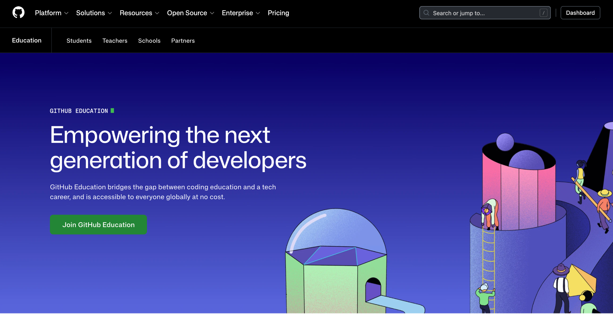
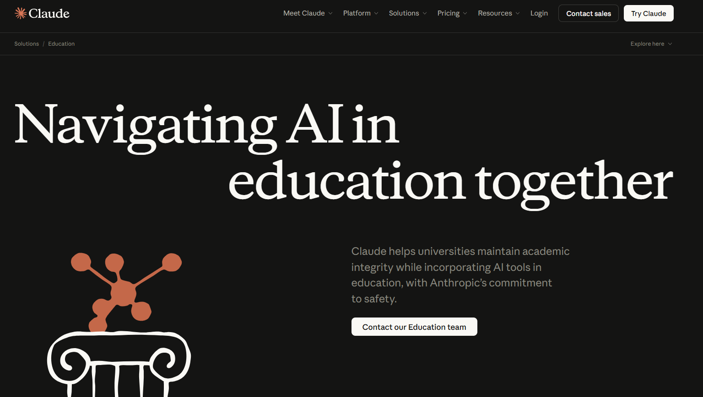

Pero … todo lo demás
- debug
- arquitectura
- documentación
- pruebas
- organizar ideas
- …
- (y mil cosas más)

Y lo estás haciendo solo

La Mayoría de los developers usa IA


No es aprender IA … Es trabajar distinto

Como GitHub
La IA es un colaborador más en tu flujo de trabajo

Como Docker
Prompts como Dockerfiles: reproducibles
Como Stack Overflow
El skill sigue siendo el mismo: saber qué preguntar


